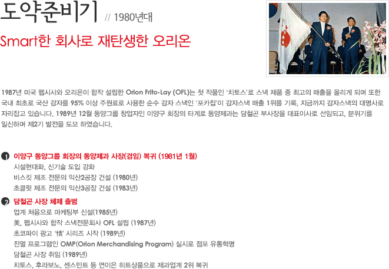
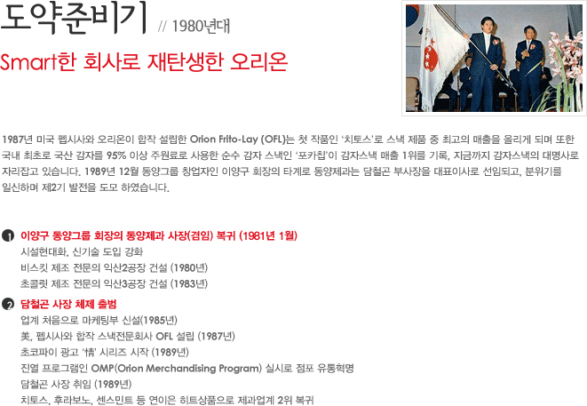

회사소개
회사소개 > 오리온 소개
빨간색 동그라미를 클릭하면 자세한 설명을 볼 수 있습니다.

- 1950s
- 1960s
- 1970s
- 1980s
- 1990s
- 2000s
- 2010s~
 



-
1950년대창업기
제과업계의 큰 별, 오리온 등장 -
1960년대성장기
왕성한 신제품 개발로 인기 독점 -
1970년대위기의 극복
최고의 히트상품, 오리온 초코파이 출시 -
1980년대도약준비기
Smart한 회사로 재탄생한 오리온 -
1990년대전환과 도약
경영합리화로 최고의 제과회사 발판 마련 -
2000년대도전과 혁신
Global Company로 발돋움하는 오리온 -
2010년대새로운 출발
World-Class Company를 향하여